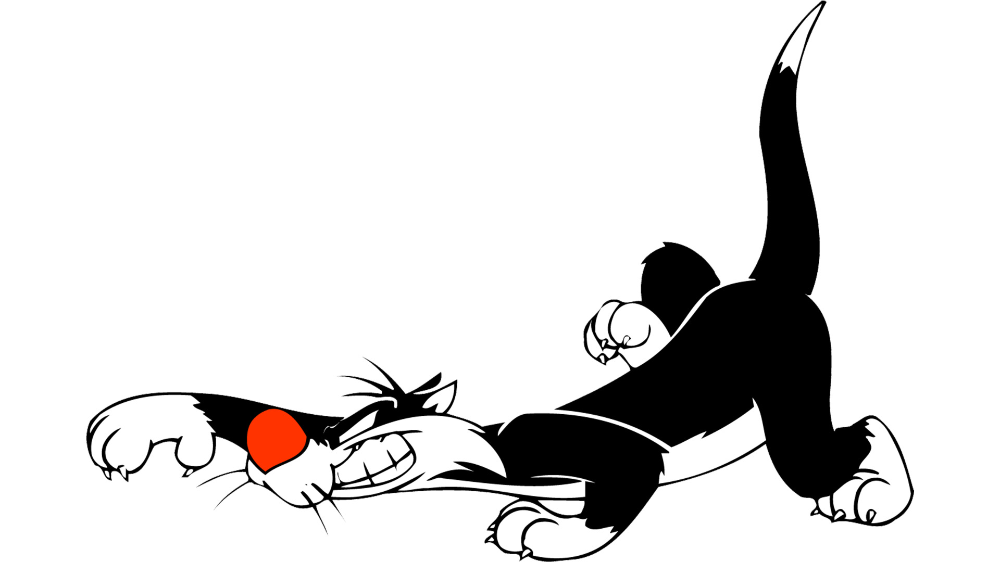

SYLVESTRE
Sylvestre le chat, dit Grosminet (Sylvester, en version originale), est un personnage de dessin animé créé en 1945. C'est l'ennemi du canari Titi. Grosminet est un chat noir et blanc avec un patron « tuxedo ».
Il est aussi doté d'une grosse truffe rouge. À l'image de Vil Coyote, il met en place des stratagèmes pour attraper Titi, mais parfois aussi le kangourou Hippety Hopper, les souris Speedy Gonzales et son cousin Nonchalanté Rodriguez ou les deux ivrognes de service Pedro et Fernando, ou même encore le lapin Bugs Bunny.
Dans ses aventures avec Gonzales, il prend le nom de Grosso Mineto, le chat le plus stupide de tout le Mexique. Il a aussi un sérieux problème d'élocution : il mouille tous les f et tous les s, ce qui crée un effet comique.
Identité et personnalité
Dans sa quête toujours vaine de capturer Titi, il doit souvent faire face à des personnages qui prennent la défense de ce dernier : Mémé, Hector le bouledogue, etc. On le voit parfois avec son fils, à qui il fait souvent honte. Pourtant, il met tout en œuvre pour éblouir son « fiston ». Utilisant divers appareils de chez ACME comme les autres Looney Tunes, ses expériences échouent toujours ; parfois, il en meurt (on le voit avec des ailes d'ange dans le dos).
C'est cependant sans ailes dans le dos qu'il meurt et se retrouve condamné aux Enfers dans le cartoon Satan attend, (Satan's Waitin', 1954) où le Diable prend les traits du chien Hector. Son juron favori est « Nom d'un chat » dans le premier doublage joué par Georges Aminel. Dans le nouveau doublage de 1997, c'est devenu « sapristi saucisse », qu'il prononce « faprifti faufiffe ».